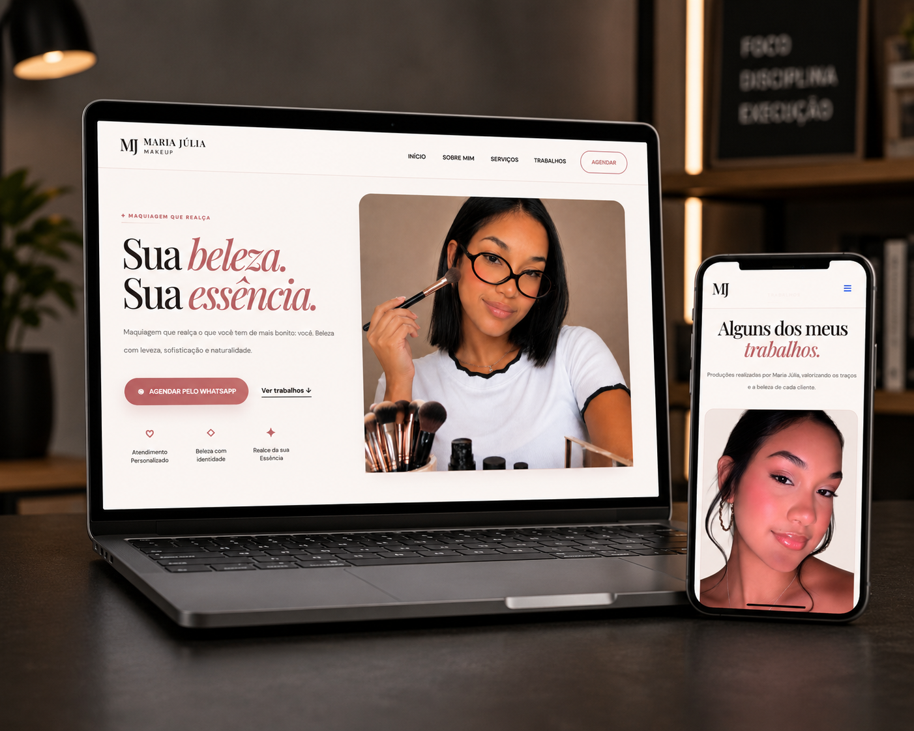
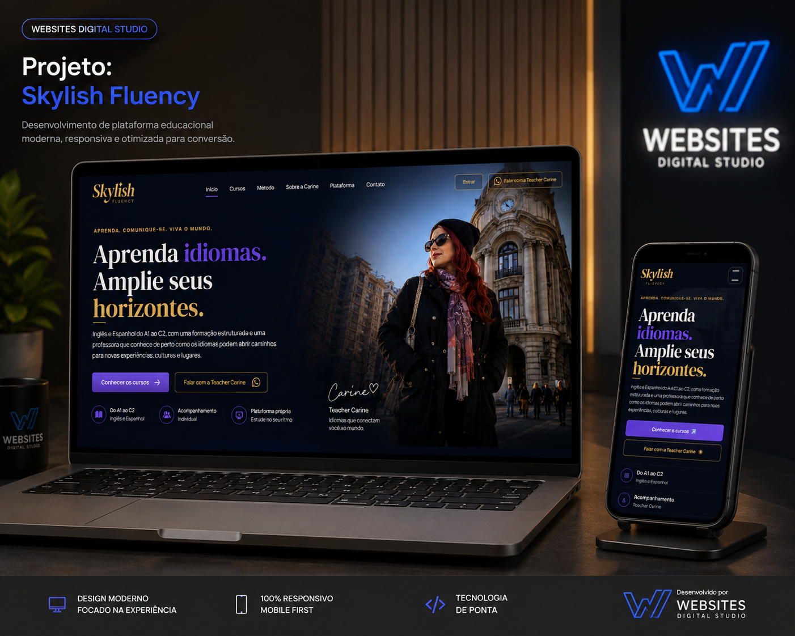

▰
Sites Profissionais
Sites modernos para empresas e profissionais que querem transmitir confiança e se destacar.
Design estratégico e desenvolvimento autoral para transformar negócios em marcas digitais profissionais, memoráveis e prontas para converter.
Projetos modernos, claros e focados em apresentar seu negócio com profissionalismo.
Sites modernos para empresas e profissionais que querem transmitir confiança e se destacar.
Páginas estratégicas para campanhas, serviços, lançamentos e captação de contatos.
Apresente seus trabalhos, projetos e resultados de forma elegante e profissional.
Fortaleça a presença digital da sua empresa com informações claras e contato facilitado.
Experiência consistente em celular, tablet, notebook e telas maiores.
Estrutura organizada, navegação intuitiva e atenção à velocidade e experiência do usuário.
Um site elegante, responsivo e pensado para valorizar o trabalho da profissional e facilitar o agendamento.

Experiência elegante e responsiva com foco em apresentação profissional e contato pelo WhatsApp.
Ver case →
Plataforma educacional moderna para ensino de idiomas, com experiência responsiva, navegação clara e apresentação profissional dos cursos.
Ver case →🎓 Estudante de Análise e Desenvolvimento de Sistemas na Anhanguera.
Crio sites modernos, responsivos e pensados para valorizar cada negócio no digital. Cada projeto é desenvolvido com atenção aos detalhes, identidade visual e experiência do usuário.
Meu objetivo é transformar ideias em experiências digitais que transmitam profissionalismo, facilitem o contato e ajudem marcas a conquistarem mais presença online.
O valor é definido conforme a necessidade do projeto. Você escolhe o ponto de partida e recebe um orçamento personalizado.
Uma página estratégica para apresentar uma oferta, serviço, campanha ou captar contatos.
Presença digital completa para empresas e profissionais que querem transmitir confiança.
Uma apresentação elegante para projetos, trabalhos, serviços e identidade profissional.
Ferramentas e tecnologias usadas conforme a necessidade de cada projeto.
Entendemos seu negócio, público, objetivo e estilo.
Definimos a direção visual e a estrutura da página.
Transformamos o layout em um site moderno e responsivo.
Ajustamos detalhes e validamos o projeto com você.
Seu site fica pronto para divulgar e receber clientes.
A entrega não precisa terminar no botão “publicar”. O acompanhamento inicial pode fazer parte do projeto conforme o que for combinado no orçamento.
Conferência de textos, links, botões, visual e comportamento responsivo antes da publicação.
Apoio na etapa de colocar o projeto no ar e orientar domínio e hospedagem quando necessário.
Ajustes e suporte pós-entrega podem ser incluídos conforme o escopo definido para o seu projeto.
Algumas respostas rápidas para facilitar sua decisão.
Sim. Os projetos são desenvolvidos para se adaptar a celulares, tablets e computadores.
Sim. Podemos integrar chamadas diretas para WhatsApp e outros canais de contato.
Sim. O conteúdo pode ser personalizado com sua identidade, fotos, serviços, informações e chamadas.
Sim. A publicação pode fazer parte da entrega, conforme o projeto combinado.
O prazo depende do tamanho, conteúdo e complexidade. Depois do briefing, você recebe uma previsão de entrega adequada ao seu projeto.
Isso é definido no orçamento. Posso orientar a configuração de domínio, hospedagem e publicação para deixar tudo pronto para uso.
Sim. A etapa de revisão existe justamente para validar textos, imagens, estrutura e detalhes antes da publicação.
O acompanhamento pós-entrega pode ser incluído no orçamento. O período, quantidade de ajustes e tipo de suporte são definidos de forma clara antes do início do projeto.
As condições de pagamento são apresentadas junto com o orçamento e variam conforme o escopo do projeto. Assim, você sabe exatamente o que está incluído antes de começar.
Preencha as informações principais e o site prepara uma mensagem completa para você enviar diretamente pelo WhatsApp.
Leve sua marca para o digital com uma apresentação moderna, profissional e feita para você.